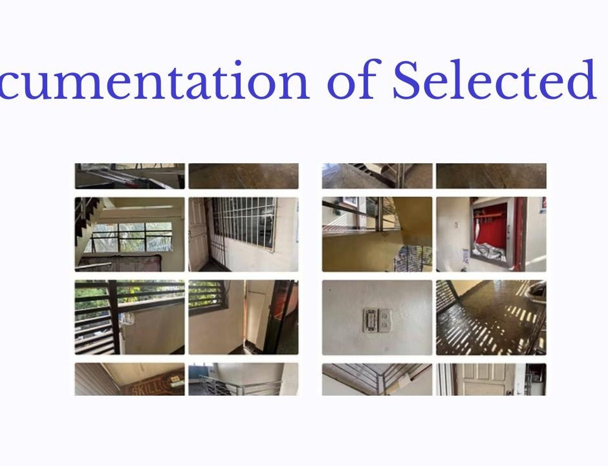

Safe Grounds
Hazard Mapping and Safety Assessment of Ilaya Barangka Integrated School
At a Glance
Research Summary
Safe Grounds examined school safety from two sides at once: the physical distribution of hazards across the IBIS campus and students’ perceptions of how safe those spaces feel. Through a campus walkthrough, a structured checklist, floor-by-floor mapping, and a Grade 12 safety-perception survey, the study showed that broken doors, damaged flooring, and other maintenance issues are clustered more heavily on upper floors. The findings support a more targeted, floor-level approach to maintenance rather than treating campus safety as a single uniform condition.
Objectives
- Document existing physical and environmental hazards across the school campus.
- Create a floor-level hazard map and a QR-ready digital reporting workflow.
- Identify hazard hotspots by location, type, and severity.
- Examine how existing safety measures relate to perceived student safety.
Context & Method
Many school-safety problems emerge not only from disasters but from recurring, ordinary maintenance failures: slippery floors, broken fixtures, blocked exits, exposed wiring, and incomplete signage. At IBIS, these risks are especially important in corridors, comfort rooms, and stair-adjacent spaces where daily movement is concentrated. The study reframed campus safety as a documentation and response problem, demonstrating that low-cost digital tools can help administrators see where hazards cluster and how safety routines influence student confidence.
- The study used a descriptive and correlational design with technology-assisted data collection.
- Researchers conducted a campus walkthrough using a structured hazard checklist and photo documentation where permitted.
- A Google Sheets dashboard and digital floor plan were used to consolidate and map reported hazards.
- A Grade 12 safety-perception survey (n = 13) was grouped into low, moderate, and high response categories for cross-tabulation.

Key Findings
- Broken doors and doorknobs were the most frequently recorded hazard, followed by damaged flooring and broken windows.
- Hazards were concentrated on the upper floors, with the 4th floor recording the highest count and the 3rd floor next.
- Safety-measure ratings generally clustered in the moderate range, indicating visible but incomplete protection systems.
- Higher ratings for drill regularity aligned with stronger trust in emergency preparedness.
Implications & Recommended Actions
- Prioritize repairs on broken doors, damaged floors, and upper-floor hotspots.
- Adopt weekly inspection walkthroughs using a standard hazard checklist.
- Improve safety-signage visibility and keep emergency routes unobstructed.
- Institutionalize QR-based hazard reporting to speed up documentation and response.
“Systematic hazard mapping makes school safety more proactive: it shows where routine maintenance must happen first and why visible safety practices shape student confidence.”